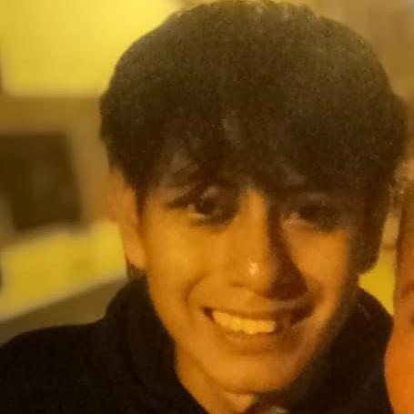

El blog Personal de Angel
Bienvenido a mi perfil
Mi nombre es Luis Angel Torres, tengo 17 años y soy estudiante de
Programación en CERTUS, actualmente cursando el primer ciclo. Vivo en
Lima, Perú, ciudad donde continúo desarrollándome tanto en el ámbito
académico como personal.
Culminé mis estudios secundarios hace un año y actualmente estoy
comenzando una nueva etapa de mi formación profesional. Elegí el área
de Programación porque me interesa la tecnología y, especialmente,
el desarrollo de aplicaciones y proyectos que permitan crear
soluciones útiles e innovadoras.
Además de mis estudios, una de mis principales aficiones es el
desarrollo de proyectos de programación, ya que disfruto aprender
nuevas herramientas y poner en práctica mis conocimientos. También me
gusta la danza folclórica, especialmente los caporales, actividad que
me permite expresar mi creatividad, mantenerme activo y conocer más
sobre nuestra cultura y tradiciones.
Mi objetivo es seguir adquiriendo conocimientos, mejorar mis
habilidades y prepararme para crecer profesionalmente en el área de
la programación.
Este proyecto representa una oportunidad para presentar quién soy,
mis intereses y algunos de los aspectos que forman parte de mi vida
como estudiante.
¡Bienvenido a mi perfil y gracias por conocer un poco más sobre mí!

Angel Torres
FORMACIÓN ACADÉMICA
Estudios realizados
| Estudios Escolares |
Secundaria completa |
| Estudios Técnicos |
Desarrollo de Software |
| Estudios Universitarios |
En Proceso |
| Cursos |
Desarrollo de Software y Pensamiento Lógico |
| Certificaciones |
En Proceso |
| Otros estudios realizados |
Ninguno |
TABLA DE ESTUDIOS BÁSICOS
| Nivel educativo |
Institución |
Año |
Estado |
| Primaria |
My Little School |
2020 |
Culminado |
| Secundaria |
My Little School |
2025 |
Culminado |
HABILIDADES
| Me adapto fácilmente a los cambios. |
| Expreso mis ideas con claridad. |
| Genero confianza y logro acuerdos. |
| Busco aprender y mejorar constantemente. |
| Busco acuerdos beneficiosos. |
CONOCIMIENTOS
| Tecnología |
HTML |
| Herramientas |
Google Workspace, GitHub y Word |
| Otros |
Organización de información digital y manejo básico de
herramientas tecnológicas
|
Perfil del Estudiante
| ¿Quién es? |
Soy un estudiante de CERTUS que ingresó a esta carrera por
pasión y un deseo constante de crecer profesionalmente en el
desarrollo de software.
|
| ¿Qué estudia? |
Desarrollo de Software |
| ¿Cuáles son sus intereses? |
Aprender cosas nuevas, crecer profesionalmente y mejorar
constantemente.
|
| ¿Cuáles son sus fortalezas? |
La adaptación rápida a entornos laborales y sociales, y el
manejo de problemas con cierto nivel de dificultad.
|
| ¿Qué conocimientos posee? |
Conocimientos básicos de HTML, herramientas digitales y
desarrollo de software.
|
| ¿Cuáles son sus objetivos profesionales? |
Crecer profesionalmente, aprender constantemente y aportar
mis habilidades a la empresa.
|
| ¿Qué espera lograr en el futuro? |
Lograr estabilidad laboral, seguir creciendo profesionalmente
y cumplir mis metas.
|
Redes Sociales
© 2026 Angel Torres - Perfil del estudiante